本記事はマイクロソフト社員によって公開されております。
こんにちは、Windows Commercial Support Performance チームです。
本 Blog では Azure VM の Windows Server 2022 の日本語化を行う際のベストプラクティスとして、オンラインおよびオフラインでのインストール方法をご紹介します。
概要
Azure では、Windows の日本語イメージを提供しておらず、Windows Server 2022 以前では、WSUS 経由での言語パックインストールをサポートしていません。
そのため、日本語化にはインターネット上の Windows Update への通信が必要となります。
インターネットへの接続が得られずオフラインで言語パックをインストールする場合は、ボリューム ライセンスなどのチャネルを通じて言語パックの ISO メディアを入手することが必要となります。
日本語対応の Windows 仮想マシンをデプロイする計画がある場合は、日本語化を完了した仮想マシンのイメージを保存しておくことをお勧めします。
対象 OS バージョン
本記事で対象とする OS バージョンは以下の通りとなります。
- Windows Server 2022 以前
Windows Server 2025 および Windows 11 Version 22H2 以降のバージョンについては、 Install-Language コマンドを使用した手順に関する以下の記事をご覧ください。
本 Blog で紹介するバージョンについても、言語パックのインストール後の流れは同様となります。
Azure VM の日本語化
日本語化の流れ
組織のポリシー設定やセキュリティ製品、ネットワーク構成などに由来して日本語化に必要なリソースの取得に失敗する場合がありますので、そのような構成を行う前の、デプロイ直後のタイミングで、以下の流れにて日本語化を行います。
いずれの場合にも、インストール後には更新プログラムを適用してください。特にオフラインでのインストール時には、下記 Blog で述べられている不具合が起こる可能性が高くなるため、速やかに適用するようお願いします。
(参考) 言語パックインストール時のご留意点
オンラインでインストールが可能な場合
- Settings > Time & language > Language & region に移動し、 [Add a language] をクリックします。
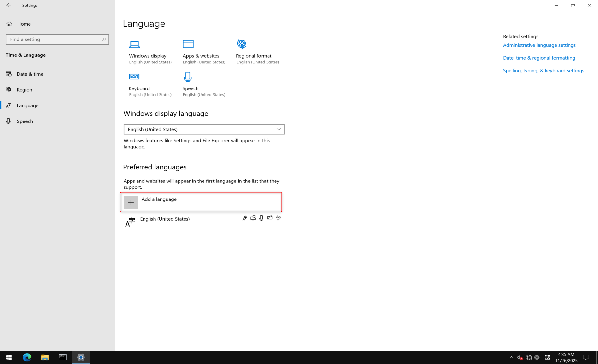
- Choose a language to install 画面では、日本語を選択して [Next] をクリックします。
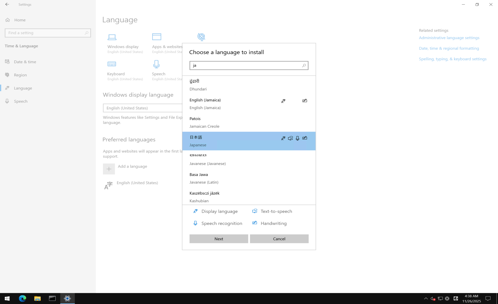
- Install language features では、 [Language pack] にチェックを入れ、[Install] をクリックします。
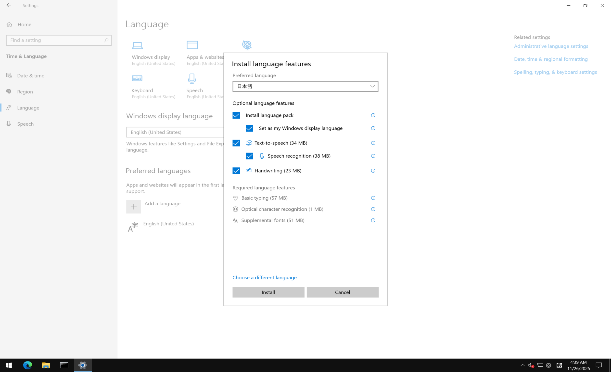
- インストールの完了を待ちます。
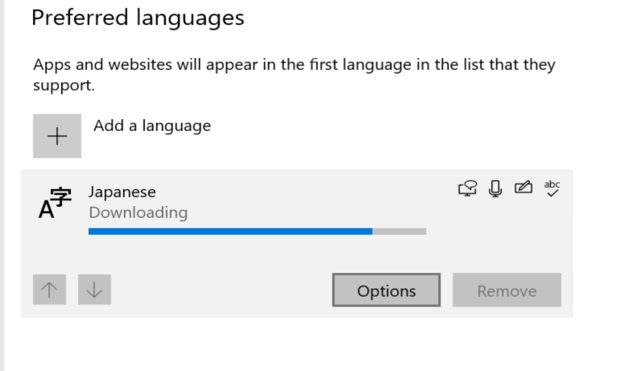
- [Japanese] の [Options] から、インストール状況が確認できます。
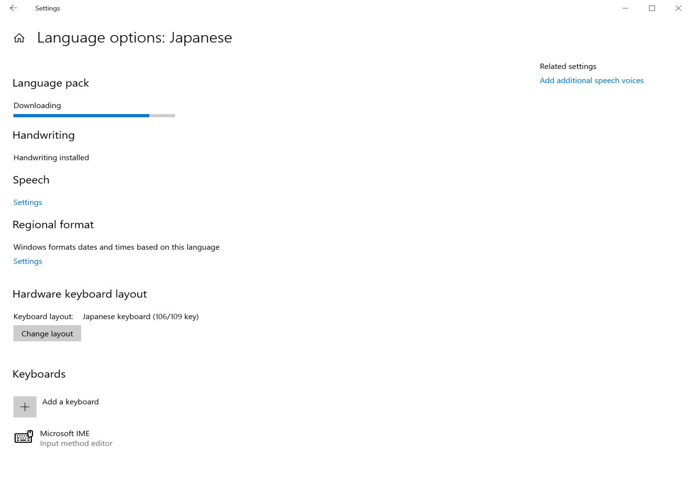
[Install language features] の画面で選択できなかった機能がこちらから選択できる場合がありますので、確認してみてください。
- インストールが完了したら、前述の通り更新プログラムを適用しサインアウトすると、[Preferred languages] から日本語表示が可能となります。
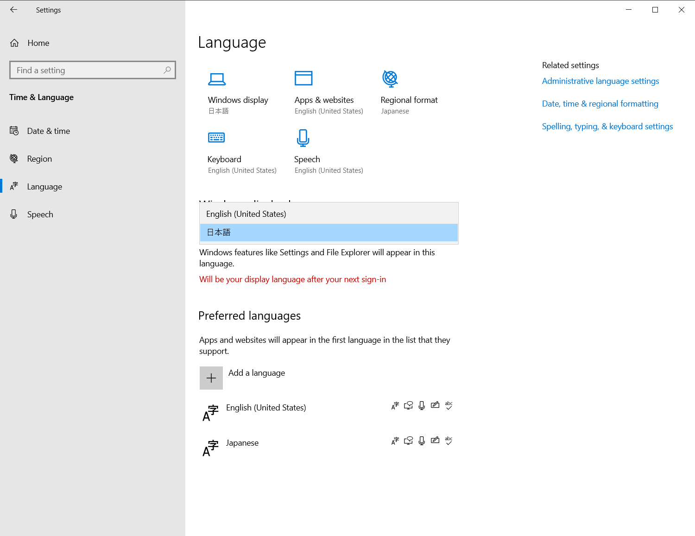
オンラインでインストールできない場合
Windows Update への通信ができない場合、オフラインでのインストールとなります。
オフライン インストール用のパッケージが収録されたメディアをダウンロードする必要があります。ご利用にはボリューム ライセンスなどの言語パックの ISO メディアにアクセスできる契約が必要です。
お客様のライセンス管理担当者にお問い合わせください。
下記リンクを参考に、ご契約に基づきメディアをダウンロードしてください。
Windows Server 2022 向けには、 ”Languages and Optional Features for Windows Server 2022” が必要となります。
ダウンロードした iso ファイルを対象の仮想マシンにマウントします。
スタート メニューを右クリックし、[Run] を選択します。続いて “lpksetup.exe” と入力します。
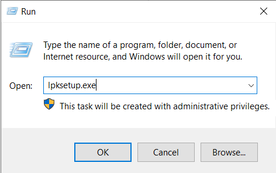
- [Install display languages] をクリックし、続く画面で [Browse] から、手順 2. でマウントして作成されたドライブを選択します。
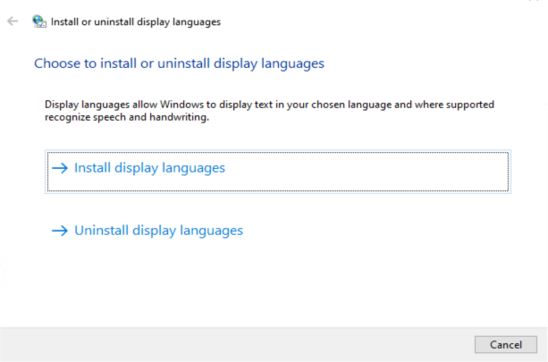
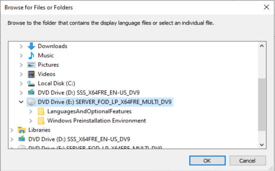
- [Microsoft-Windows-Server-Language-Pack_x64_ja-jp] を選択し、[OK] をクリックします。
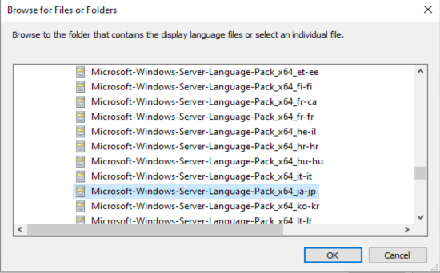
- さらに [Japanese (日本語)] が選択されていることを確認し、[Next] をクリックします。
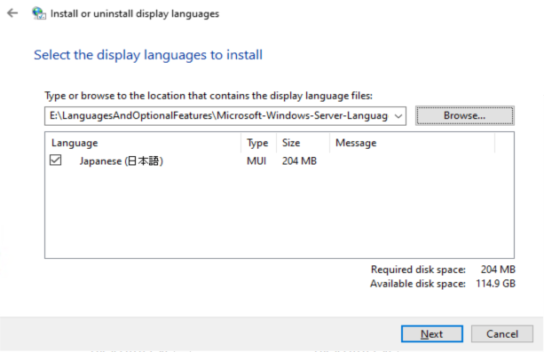
- ライセンス条項を読み、同意できれば [I accept the license terms.] にチェックを入れ [Next] をクリックします。インストールが始まります。
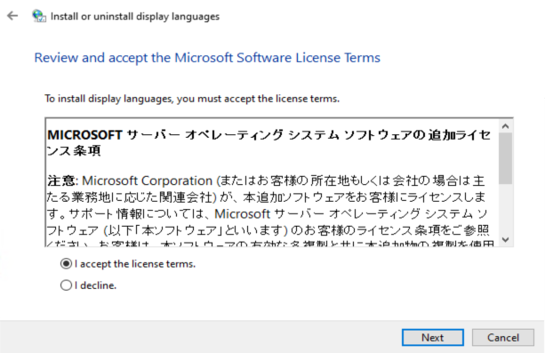
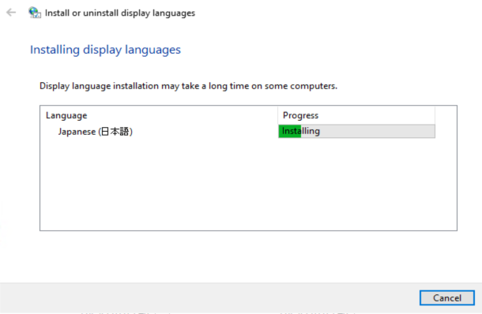
- [Completed] と表示されたら [Close] をクリックし閉じます。
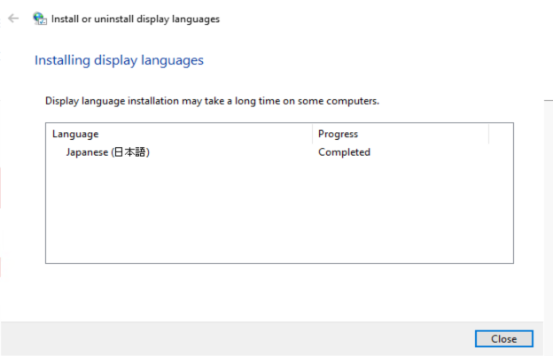
- オフラインでの言語パックインストール後は速やかに更新プログラムの適用を実施します。
WSUS 環境下でのオンライン言語パック取得
Windows Server 2022 以前では、WSUS 経由での言語パックインストールをサポートしていません。
そのため、日本語化を完了したい場合には、インターネット上の Windows Update への通信を許可するか、オフラインでインストールすることが必要となります。
インターネット上の Windows Update への通信を許可する場合、下記 Blog の「WSUS / MECM の利用時に、言語追加を可能とするグループ ポリシー」の項を参考に、関連 GPO を構成・適用したうえで本 Blog の「オンラインでインストールできない場合」の節をお試しください。
いかがでしたでしょうか。本記事の情報が少しでも皆様のお役に立てば幸いです。
本情報の内容（添付文書、リンク先などを含む）は、作成日時でのものであり、予告なく変更される場合があります。
更新履歴
2025/12/15 本 Blog の公開